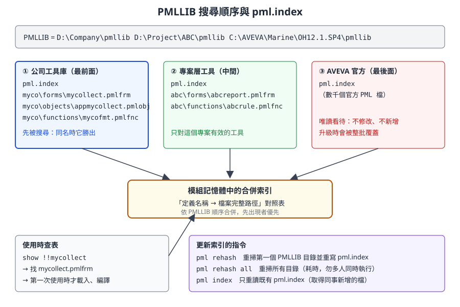
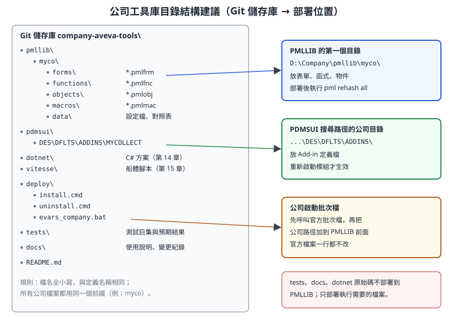

第 10 章 開發環境：PMLLIB、檔案類型與部署結構
本章是第三部分「二次開發技術」的第一章，回答一個看似簡單、卻讓最多新手卡關的問題：程式放在哪裡，系統怎麼找到它？ 讀完本章，你會知道 PML 檔案要怎麼命名、放在哪個目錄、改完之後要下什麼指令才會生效，以及公司工具庫應該怎麼組織、怎麼部署、怎麼移除。
內容依據 AVEVA E3D 2.1 的 PML Customisation User Guide 與 Software Customisation Guide（help.aveva.com 公開頁面）、AVEVA Marine 12.1 SP4 開源範例（aveva-marine-dev-skill，MIT 授權）自主撰寫。AVEVA Marine 的舾裝部分承襲 PDMS，PML 機制與 E3D 高度相同，但目錄名稱（例如
PDMSUI與 E3D 的PMLUI）與部分指令可能有版本差異。標示 〔待核對〕 的項目，請以公司安裝版本確認。
10.1 學習目標
讀完本章，你應該能夠：
- 比較 PML、PML.NET、.NET Add-in、Vitesse 四條開發路線，並為一個需求選出合適的路線。
- 說明
PMLLIB搜尋路徑與pml.index索引的運作方式，知道新增、修改、搬移檔案後分別要執行哪個指令。 - 依檔案類型正確命名
.pmlfnc、.pmlfrm、.pmlobj等檔案，並說出「檔名必須等於定義名稱」的原因。 - 說明
PDMSUI與 Add-in 定義目錄的角色。 - 以「平行目錄 + 搜尋順序」擴充系統，而不修改任何官方檔案。
- 建立個人開發環境：訓練專案、開發帳號、編輯器、版本控制。
- 為公司規劃一個可以部署、可以移除、可以回復的工具庫目錄結構。
10.2 四條開發路線
AVEVA Marine 不只有一種客製化技術。選錯路線的代價很高：例如想用 PML 讀船體板架的零件資料，常會發現資料根本不在 PML 能直接看到的地方。下表先建立全局觀，後續章節再分別深入。
| 路線 | 語言 | 執行位置 | 適合的工作 | 不適合的工作 | 本課程章節 |
|---|---|---|---|---|---|
| PML | PML1／PML2 | 舾裝相關模組（Outfitting／Design、Draft 等）內的直譯器 | 查詢、報表、表單、選單、批次修改、規則 | 大量運算、複雜 UI、與外部系統的網路連線 | 第 11–13 章 |
| PML.NET | C# 類別 + PML 呼叫 | C# 組件載入到 PML 中 | 補足 PML 做不到的事：檔案格式、演算法、.NET 控制項 | 單純的查詢工具（多一種語言就多一份維護） | 第 14 章 |
| .NET Add-in（CAF） | C# | 模組啟動時由 CAF 框架載入 | 停靠視窗、大型工具、與 ERP／PDM 整合 | 一次性的小腳本 | 第 14 章 |
| Vitesse | Python 2.6 | 船體模組（承襲 Tribon） | 船體板架、零件、船體圖面的讀取與自動化 | 舾裝資料（管路、設備） | 第 15 章 |
選擇路線時，可以依序問三個問題：
- 資料在哪裡？ 舾裝資料（Dabacon 資料庫）優先考慮 PML；船體 Databank 資料優先考慮 Vitesse。
- 介面有多複雜？ 一個對話框加幾個按鈕，PML2 表單就夠了；需要停靠視窗、即時更新、複雜表格，考慮 .NET。
- 誰來維護？ PML 工具可以由懂業務的工程師維護；.NET 工具需要有 C# 能力與 Visual Studio 建置環境的人。
開發人員須知： 不要因為「C# 比較熟」就把所有工具都寫成 .NET Add-in。PML 是 AVEVA 介面本身使用的語言，系統內建的表單、選單、規則大量依賴它；只用 .NET 而不懂 PML，會看不懂官方程式，也無法掛進既有選單。建議所有開發人員都先學好 PML，再視需要加上 .NET。
10.3 PML 程式如何被找到：PMLLIB 與 pml.index
10.3.1 PMLLIB 是一個「路徑清單」
PMLLIB 是一個環境變數，內容是一串目錄，彼此以空白分隔。它的角色和你熟悉的這些東西一樣：
| 你熟悉的機制 | 對應到 PML |
|---|---|
Windows／Linux 的 PATH |
依序搜尋目錄，找到第一個符合的就使用 |
Python 的 sys.path |
匯入模組時依序搜尋 |
| Java 的 classpath | 類別名稱對應到檔案位置 |
官方文件規定：PML 檔案必須存放在 PMLLIB 指向的目錄之中（可以放在子目錄裡）。函式、表單、物件都是從 PMLLIB 自動載入的；你不需要寫 import 或 include，只要呼叫 !!myFunction() 或 show !!myForm，系統就會去找對應的檔案。
一個典型的公司環境可能長這樣：
PMLLIB = D:\Company\pmllib D:\Project\ABC\pmllib C:\AVEVA\Marine\OH12.1.SP4\pmllib
三個目錄各有用途：公司工具庫放最前面，專案專用工具放中間，AVEVA 官方的 PML 放最後面。路徑與安裝目錄名稱只是示意，請依公司實際環境調整。
在命令列可以查看目前的設定：
q evar PMLLIB
q evar PDMSUI
10.3.2 pml.index：每個目錄一份索引
如果每次呼叫函式都要掃描硬碟上幾千個檔案，系統會非常慢。所以 PML 使用索引：
- 模組啟動時，PML 會讀取
PMLLIB每個目錄中的pml.index檔（若不存在則掃描並建立）。 - 這些索引被合併成記憶體中的一張對照表：定義名稱 → 檔案完整路徑。
- 呼叫
!!mycoArea()或show !!mycollect時，系統查表找到檔案，第一次使用時才真正讀檔並載入。 - 同一個名稱出現在多個目錄時，排在
PMLLIB前面的目錄優先。這就是「以搜尋順序覆蓋」的基礎。

圖 10-1 PMLLIB 搜尋順序與 pml.index。每個 PMLLIB 目錄有自己的索引檔，模組把它們依順序合併成一張對照表。（本課程自繪）
專業提醒： 部分較新的 AVEVA 產品版本說明索引改為在記憶體中管理，不再產生
pml.index檔案。AVEVA Marine 12.1 屬於使用pml.index的世代，但仍請在公司環境實際查看目錄中是否有這個檔案〔待核對〕。
10.3.3 更新索引與重新載入的指令
| 指令 | 作用 | 什麼時候用 |
|---|---|---|
pml rehash |
重新掃描 PMLLIB 的第一個目錄，更新它的 pml.index |
在自己的工作目錄（放在第一位）新增了檔案 |
pml rehash all |
重新掃描 所有 PMLLIB 目錄並更新索引 |
不確定檔案在哪個目錄、或部署了新的工具庫 |
pml index |
不重建，只重新讀取既有的 pml.index |
同事或管理員已經更新了共用目錄的索引，你要取得新內容 |
pmlscan 目錄名稱 |
在 AVEVA 產品沒有執行時，從作業系統更新某個目錄的索引 | 部署腳本、夜間排程 |
pml reload form !!表單名 |
重新讀取已載入的表單定義 | 修改了表單檔（.pmlfrm） |
pml reload object 物件名 |
重新讀取物件定義 | 在物件中新增了方法或成員 |
q var !!PML.getpathname('檔名.pmlobj') |
查詢某個檔案實際從哪個路徑載入 | 懷疑載入的是別的目錄的同名檔 |
幾個官方文件特別提醒的細節：
- 把自己的工作目錄放在
PMLLIB第一位。 這樣pml rehash只需要掃描這一個目錄，速度快。 pml rehash all會花一些時間，而且如果兩個使用者同時執行，索引檔可能無法正確重建。 所以官方建議只在必要時使用，並由系統管理員收緊共用PMLLIB目錄的寫入權限。- 只修改既有物件的方法內容，不需要 reload；新增方法才需要。 修改表單檔且動到預設建構子時，則需要重新載入表單。
- 有時需要先刪除舊的
pml.index再執行pml rehash，才能讓索引反映檔案的刪除或改名。
10.3.4 「改了沒生效」的判斷表
| 你做了什麼 | 應該執行 | 備註 |
|---|---|---|
新增一個 .pmlfnc／.pmlfrm／.pmlobj |
pml rehash（檔案在第一個目錄）或 pml rehash all |
不 rehash 就會出現「找不到函式／表單」 |
| 檔案改名或搬到別的子目錄 | 刪除舊索引後 pml rehash all |
舊索引可能還指向原路徑 |
| 修改表單的版面或 gadget | pml reload form !!表單名，再 show |
表單已開啟時先關閉 |
| 在物件定義裡新增方法 | pml reload object 物件名 |
已存在的物件實例仍是舊定義，建議重新建立 |
| 修改函式內容 | 再呼叫一次通常即可；若仍是舊行為，重新啟動模組〔待核對〕 | 不同版本對函式快取的行為可能不同 |
| 新增或修改 Add-in 定義檔 | 重新啟動模組 | Add-in 只在模組啟動時讀取（見第 13 章） |
| 修改啟動批次檔或環境變數 | 重新啟動整個 AVEVA | 環境變數在程序啟動時決定 |
開發人員須知： 把
pml rehash、pml reload form想成「編譯並重新部署」。PML 沒有 IDE 幫你自動重載，所有「我明明改了」的問題，八成是索引或快取沒更新，而不是程式邏輯錯誤。
10.4 檔案類型與命名規則
10.4.1 副檔名一覽
官方文件定義的 PML 檔案副檔名（副檔名必須是小寫）：
| 副檔名 | 內容 | 定義語法 | 呼叫方式 | 自動載入 |
|---|---|---|---|---|
.pmlfnc |
全域函式（PML Function） | define function !!名稱(...) … endfunction |
!!名稱(...)、call !!名稱(...) |
是 |
.pmlfrm |
表單（Form） | setup form !!名稱 … exit，加上 define method |
show !!名稱、!!名稱.方法() |
是 |
.pmlobj |
自訂物件型別（Object） | define object 名稱 … endobject，加上 define method |
object 名稱(...) |
是 |
.pmlcmd |
PML 命令物件（Command） | 依版本而定 | 由命令管理器使用 | 是〔Marine 12.1 是否支援待核對〕 |
另外還有巨集（Macro）。巨集是一連串依序執行的命令，用 $M 檔案路徑 執行。官方說明巨集檔名可以是作業系統允許的任何名稱，常見用 .mac；不少公司與開源範例使用 .pmlmac 作為慣例。巨集不經過 pml.index 自動載入，通常放在 PDMSUI 的目錄下或以完整路徑執行。新開發的程式碼，官方建議優先寫成函式或物件方法，因為它們會檢查引數型別、可以有回傳值。
10.4.2 「檔名 = 定義名稱」規則
這是新手最常犯錯的地方。PML 的索引用檔名來猜定義名稱，所以兩者必須一致：
| 定義 | 檔名（全小寫） | 錯誤示範 |
|---|---|---|
define function !!mycoArea(...) |
mycoarea.pmlfnc |
MycoArea.pmlfnc（有大寫）、myco_area.pmlfnc（名稱不同） |
setup form !!mycollect |
mycollect.pmlfrm |
mycollect.pmlfrm.txt（編輯器多加了副檔名） |
define object APPMYCOLLECT |
appmycollect.pmlobj |
appMyCollect.pmlobj |
define object MYCOTALLY |
mycotally.pmlobj |
兩個物件寫在同一個檔案裡 |
規則整理：
- 一個檔案只放一個定義：一個函式、一個表單（含它的方法）、或一個物件（含它的方法）。
- 檔名全小寫，並與定義名稱相同（不含
!!）。PML 的定義名稱本身不分大小寫，但檔名比對以小寫為準。 - 副檔名小寫，而且決定了檔案的種類。
- 檔案可以放在子目錄（例如
myco\forms\），索引會掃描子目錄，所以子目錄只是為了讓人好整理。
專業提醒： PML 的函式、表單、物件型別名稱都在同一個全域命名空間。如果你寫了
!!report()，而官方或別的部門也有一個report.pmlfnc，誰先被找到就用誰，另一個會悄悄失效。公司所有檔案都應該加上固定前綴（本課程範例用myco），就像 C# 的命名空間或 Java 的套件名稱。
10.4.3 檔案標頭範本
公司工具庫的每個檔案都應該有一致的標頭。下面的格式取材自開源範例 appmycollect.pmlobj（MIT 授權），它模仿了 AVEVA 官方 PML 檔的標頭風格：
------------------------------------------------------------------------
--
-- File: mycoarea.pmlfnc
-- Type: Function Definition
-- Module: myco
-- Author: 王小明
-- Created: 2026-10-28
-- Description: 計算矩形面積（教學範例）
--
------------------------------------------------------------------------
標頭記錄的資訊在出問題時非常有用：看到一個陌生的檔案，馬上知道它屬於哪個工具、誰負責、做什麼。
10.5 PDMSUI 與 Add-in 定義目錄
PMLLIB 管「程式碼」，PDMSUI 管「介面設定」。在 PDMS 與 AVEVA Marine 中，PDMSUI 指向一組介面相關目錄，依模組分成子目錄（例如舾裝設計模組的 DES）。E3D 文件中對應的變數叫 PMLUI，概念相同。
| 項目 | PMLLIB |
PDMSUI |
|---|---|---|
| 放什麼 | 函式、表單、物件（.pmlfnc、.pmlfrm、.pmlobj） |
巨集、預設值、Add-in 定義檔、應用程式介面設定 |
| 如何載入 | 透過 pml.index 依名稱自動載入 |
由模組依固定子目錄讀取，或以 $M 執行 |
| 修改後 | pml rehash／pml reload |
多數情況需重新啟動模組 |
10.5.1 Add-in 定義檔
PML Add-in 是讓你的工具在模組啟動時被「掛上去」的機制，例如在選單裡多一個項目。它由兩個部分組成：
- Add-in 定義檔：一個沒有副檔名的純文字檔，放在
PDMSUI下的 Add-in 目錄，每一行是「鍵: 值」。 - Add-in 物件：一個
.pmlobj，放在PMLLIB，實作.modifyMenus()等掛勾方法。
Add-in 目錄的位置有版本差異：
| 來源 | 路徑 |
|---|---|
AVEVA Marine 12.1 SP4 開源範例（install.cmd） |
%PDMSUI%\DES\DFLTS\ADDINS\ |
| E3D 1.1 Software Customisation Guide 的範例 | DES\DFLTS\ADDINS 目錄 |
| E3D 1.1／2.1 文件的一般格式說明 | %PMLUI%\<模組>\ADDINS\<addin 名稱> |
請在公司安裝目錄中，找到官方 Add-in 定義檔實際所在的資料夾，以那裡為準〔待核對〕。
開源範例的定義檔只有兩行：
Name: MYCOLLECT
Object: APPMYCOLLECT
官方文件列出的常用鍵：
| 鍵 | 作用 |
|---|---|
Name |
Add-in 的唯一識別名稱（必填） |
Title |
描述文字；若 Add-in 定義的是一個應用程式，會顯示在主視窗標題列 |
ShowOnMenu |
是否出現在 Applications 選單，預設 false |
Object |
Add-in 物件型別名稱（用於有選單列的模組），系統會呼叫它的 .modifyMenus() 等方法 |
Control |
使用者自訂的控制物件型別；模組啟動時系統會建立同名全域變數 |
ModuleStartup |
模組第一次啟動時執行的回呼，例如 !!myAddinController.initialise() |
StartupModify、SwitchModify |
在指定應用程式啟動或切換時加掛回呼，格式為「應用程式名稱:回呼」 |
Add-in 物件的寫法與載入流程，在第 13 章完整解說。
10.6 不修改官方檔案的原則
AVEVA 安裝目錄裡有數千個 PML 檔案，很多看起來「改一行就能達成需求」。請不要這樣做。 原因如下：
| 直接修改官方檔案的後果 | 說明 |
|---|---|
| 升級時被覆蓋 | 安裝 Service Pack 或修補程式會換掉官方檔案，你的修改消失，而且沒人記得改過什麼 |
| 無法追蹤 | 官方檔案不在公司的版本控制裡，出問題時無法比對 |
| 影響所有專案 | 官方目錄通常是所有專案共用，一個錯誤會讓全公司停擺 |
| 失去支援 | 系統異常時，原廠支援通常要求先回到未修改的狀態 |
正確做法是「平行目錄擴充、搜尋順序覆蓋」：
- 擴充（優先）：新功能寫成公司自己的檔案，放在公司目錄。透過 Add-in 物件把選單項目「加上去」，而不是改官方的選單定義。
- 覆蓋（最後手段）：如果真的必須改變官方表單或函式的行為，把該檔案複製到公司目錄（
PMLLIB較前面），在副本上修改。官方原檔保持不動，移除副本就能回到原狀。 - 記錄覆蓋清單：每一個覆蓋的官方檔案，都要記錄原始版本、修改原因、負責人。升級時逐一比對新版官方檔案，決定是否重新套用。
專業提醒： 覆蓋官方檔案等於「fork 了一份官方程式碼」，升級後官方可能修了錯誤或改了介面，而你的副本仍是舊版。能用 Add-in 掛勾達成的，就不要覆蓋。
10.6.1 公司包裝批次檔
要把公司目錄加到 PMLLIB 前面，也不應該修改官方啟動批次檔。常見做法是寫一個公司的包裝批次檔：先呼叫官方批次檔，再調整環境變數。
@echo off
rem -- 示意：公司包裝批次檔 evars_company.bat
rem -- 1. 先呼叫官方批次檔設定標準環境（檔名與參數依公司安裝而定〔待核對〕）
call "C:\AVEVA\Marine\OH12.1.SP4\marine.bat" %*
rem -- 2. 把公司工具庫放到 PMLLIB 最前面（以空白分隔）
set PMLLIB=D:\Company\pmllib %PMLLIB%
rem -- 3. 公司介面目錄（Add-in 定義檔）的加入方式依版本而定〔待核對〕
rem set PDMSUI=...
開發人員須知： 官方批次檔通常在最後才啟動主程式，如果先
call官方批次檔，它可能直接把 AVEVA 開起來，你的set就來不及生效。實務上要先閱讀官方批次檔的結構，找出它預留的客製化掛勾（PDMS 系常見custom_evars.bat一類的檔案）或把「設定環境」與「啟動程式」分開呼叫〔待核對〕。這件事請與系統管理員一起確認，不要自行修改共用捷徑。
10.7 開發用專案、帳號與工具
10.7.1 環境分層
| 環境 | 用途 | 資料 | 誰能寫入 |
|---|---|---|---|
| 個人開發 | 寫程式、反覆測試 | 訓練專案（官方範例專案或公司複製的測試專案） | 開發人員自己 |
| 測試 | 部署前驗證、使用者試用 | 正式專案的複本或專用測試專案 | 開發人員、測試人員 |
| 正式 | 日常設計工作 | 正式專案 | 設計人員；工具只讀或經審核後寫入 |
申請開發環境時，向系統管理員確認這些項目：
- 訓練專案代碼與可登入的 MDB：所有會修改資料的練習只能在這裡做。
- 開發帳號：屬於有寫入權限的 Team，才能測試建立與修改。
- 個人
PMLLIB目錄：放在你自己的磁碟，排在PMLLIB第一位，pml rehash才快，也不會影響別人。 - 共用工具庫的唯讀副本：開發時你看得到公司其他工具，但不能直接改共用目錄。
10.7.2 編輯器與編碼
| 項目 | 建議 |
|---|---|
| 編輯器 | Visual Studio Code 或 Notepad++。兩者都有社群提供的 PML 語法高亮（VS Code 擴充套件、Notepad++ 自訂語言定義）；安裝前請檢查發佈者、支援版本與公司軟體政策 |
| 檔案編碼 | 依公司版本測試：中文註解或中文表單標題能否正確顯示。AVEVA Marine 12.1 的 PML 檔通常以系統字碼頁（繁體中文 Windows 為 Big5／CP950）讀取，E3D 2.x 以後對 Unicode 支援較完整〔待核對〕。第 16 章會再談編碼 |
| 換行 | Windows 格式（CRLF）最保險 |
| 副檔名 | 關閉「隱藏已知副檔名」，避免存成 xxx.pmlfnc.txt |
| 縮排 | 用空白不用 Tab，兩格縮排（與開源範例一致） |
10.7.3 開發迴圈
一個 PML 工具的日常開發流程：
1. 在編輯器修改檔案（個人 PMLLIB 目錄）
2. 新檔案：pml rehash 已載入的表單：pml reload form !!xxx
3. 在命令列執行：show !!xxx 或 !r = !!xxx(...) 再 q var !r
4. 有問題：$R100（追蹤開）→ 重現 → $R0（追蹤關），或用 $P 印出變數
5. 通過後提交到 Git，再部署到測試環境
追蹤與除錯在第 11 章與第 17 章詳細說明。
10.8 公司工具庫的目錄結構建議

圖 10-2 建議的公司工具庫結構。左邊是 Git 儲存庫，右邊是部署目的地。只有執行所需的檔案會被部署。（本課程自繪）
結構背後的設計原則：
| 原則 | 做法 | 理由 |
|---|---|---|
| 一個前綴 | 所有 PML 定義名稱與目錄都用 myco（請換成公司代碼） |
避免與官方或其他部門撞名；一眼看出哪些是公司的 |
| 依類型分子目錄 | forms、functions、objects、macros、data |
與官方 PMLLIB 的組織習慣一致，好找 |
| 原始碼與部署分離 | 儲存庫包含測試、文件、.NET 原始碼；部署只複製執行需要的檔案 | 正式環境保持乾淨，也避免使用者看到測試程式 |
| 部署可重複、可移除 | install.cmd 與 uninstall.cmd 成對 |
出問題時可以在幾分鐘內回到上一版 |
| 資料與程式分離 | 對照表、標準尺寸放在 data，程式讀檔取得 |
改資料不必改程式（第 16 章） |
| 不寫死路徑 | 程式中以環境變數或 !!PML.getpathname() 找到自己的資料檔 |
部署位置改變時不用改程式 |
命名慣例建議：
| 對象 | 慣例 | 範例 |
|---|---|---|
| 函式 | !!myco + 動詞名詞 |
!!mycoFindEqui()、mycofindequi.pmlfnc |
| 表單 | !!myco + 名詞 |
!!mycofinder、mycofinder.pmlfrm |
| 物件型別 | MYCO + 名詞（全大寫書寫） |
MYCOTALLY、mycotally.pmlobj |
| Add-in 物件 | APP + 工具名 |
APPMYCOLLECT（沿用官方 APPxxx 慣例） |
| 全域變數 | !!myco + 名稱，越少越好 |
!!mycoDebug |
| 選單欄位名稱 | myco + 功能 |
myCollect、myCollectSep |
10.9 讀懂部署腳本：install.cmd
開源範例 examples/starter-kit-mycollect/install.cmd（MIT 授權，Copyright © 2026 erbi112211-boop）示範了最小的部署流程。以下摘錄關鍵段落並逐段說明（原檔註解為簡體中文）：
if "%PMLLIB%"=="" (
echo [ERR] 请先在 Marine 启动环境里运行本脚本 ^(marine.bat 环境^)
goto :eof
)
if "%PDMSUI%"=="" (
echo [ERR] PDMSUI 未定义
goto :eof
)
set KIT=%~dp0
xcopy /s /y /i "%KIT%pmllib\myco" "%PMLLIB%myco"
if errorlevel 1 ( echo [ERR] PML 源码复制失败 & goto :eof )
copy /y "%KIT%addins-des\MYCOLLECT" "%PDMSUI%DES\DFLTS\ADDINS\MYCOLLECT"
if errorlevel 1 ( echo [ERR] ADDIN 文件复制失败 & goto :eof )
| 段落 | 說明 |
|---|---|
檢查 PMLLIB、PDMSUI |
必須在已執行啟動批次檔的命令視窗中執行，否則環境變數不存在 |
set KIT=%~dp0 |
取得腳本自己所在的目錄（結尾含 \），讓腳本不依賴目前工作目錄 |
xcopy ... "%PMLLIB%myco" |
把整個 myco 子目錄複製到 PMLLIB，新增目錄，不修改官方檔案 |
copy ... ADDINS\MYCOLLECT |
把 Add-in 定義檔放到 Add-in 目錄 |
if errorlevel 1 |
每一步都檢查失敗，失敗就停止 |
腳本最後提示的驗證步驟也值得照做：重新啟動模組、q evar pmllib 確認路徑、pml rehash all、show !!mycollect 冒煙測試、檢查 Utilities 選單。移除方式是刪除 %PMLLIB%myco 與 Add-in 定義檔。
開發人員須知： 這個腳本假設
PMLLIB只有一個目錄而且以\結尾（"%PMLLIB%myco"直接把字串接起來）。如果公司的PMLLIB是多個以空白分隔的目錄（本章建議的做法），這行會產生錯誤的路徑。正式部署腳本應該明確指定目標目錄（例如D:\Company\pmllib\），而不是從PMLLIB推算。
改良後的部署腳本骨架：
@echo off
rem -- 示意：公司部署腳本 deploy\install.cmd
setlocal
set TARGET_PML=D:\Company\pmllib
set TARGET_ADDIN=D:\Company\pdmsui\DES\DFLTS\ADDINS
set KIT=%~dp0..
set STAMP=%DATE:~0,4%%DATE:~5,2%%DATE:~8,2%
rem 1. 備份現有版本（回復用）
if exist "%TARGET_PML%\myco" xcopy /s /i /y "%TARGET_PML%\myco" "%TARGET_PML%\_backup\myco_%STAMP%" >nul
rem 2. 部署 PML 與 Add-in 定義
xcopy /s /i /y "%KIT%\pmllib\myco" "%TARGET_PML%\myco"
if errorlevel 1 goto :fail
copy /y "%KIT%\pdmsui\DES\DFLTS\ADDINS\MYCOLLECT" "%TARGET_ADDIN%\MYCOLLECT"
if errorlevel 1 goto :fail
rem 3. 重建索引（AVEVA 未執行時可用 pmlscan；工具位置依安裝而定〔待核對〕）
echo [OK] 部署完成，請使用者重新啟動模組
goto :eof
:fail
echo [ERR] 部署失敗，請從 _backup 回復
exit /b 1
這個骨架有三個重點：目標目錄明確、部署前先備份、失敗時有清楚的回復指引。%DATE% 的格式依 Windows 地區設定而不同，取子字串的位置要依公司電腦調整。第 17 章會把部署與回復流程完整化。
10.10 開發人員須知
- 先確認環境，再懷疑程式。 「找不到函式」「表單沒更新」「選單沒出現」幾乎都是路徑、檔名、索引或 Add-in 目錄的問題。用
q evar PMLLIB、q var !!PML.getpathname('xxx.pmlfrm')先確認系統看到的是哪個檔案。 - 把 PML 的全域命名空間當成稀缺資源。 每一個函式、表單、物件名稱都是全域的。統一前綴，並在 Git 儲存庫中用腳本檢查有沒有重名。
- 個人目錄放第一位。 開發時你的副本會優先載入，不影響同事；測試完再部署到共用目錄。
- 共用目錄要唯讀。 官方也建議管理員收緊
PMLLIB目錄的寫入權限。一般使用者能寫入共用PMLLIB，等於任何人都能「覆蓋」任何工具。 - 不要在尖峰時間執行
pml rehash all。 它會掃描所有目錄，而且多人同時執行可能讓索引損壞。部署後請使用者重新啟動模組，或改用pml index讀取已更新的索引。 - 部署要可以回復。 每次部署前備份上一版，並記錄部署時間、版本、內容。
10.11 練習
以下練習只能在訓練專案與個人目錄中進行，不要修改共用或官方目錄。
練習 1：環境盤點
在命令列執行下列指令，把結果填入表格：
q evar PMLLIB
q evar PDMSUI
q var !!PML.getpathname('appmycollect.pmlobj')
| 項目 | 你的環境 |
|---|---|
PMLLIB 依序有哪些目錄 |
|
| 哪一個是你的個人目錄（應在第一位） | |
PDMSUI 的值 |
|
| 官方 Add-in 定義檔所在的實際資料夾 | |
每個 PMLLIB 目錄是否有 pml.index |
如果第三行回報錯誤，表示索引中沒有這個檔案，這是正常的，代表 MyCollect 尚未部署。
練習 2：第一個函式與索引
- 在個人
PMLLIB目錄建立myco\functions\mycohello.pmlfnc：
-- 示意：第一個函式
define function !!mycoHello(!who is STRING) is STRING
return 'Hello, ' & !who
endfunction
- 不執行任何指令，直接在命令列輸入
q var !!mycoHello('PML')，記錄錯誤訊息。 - 執行
pml rehash，再試一次，應該看到'Hello, PML'。 - 把檔名改成
MycoHello.pmlfnc（有大寫），刪除pml.index後pml rehash，觀察結果，再改回來。
練習 3：搜尋順序覆蓋
- 在個人目錄與另一個測試目錄各放一個
mycohello.pmlfnc，回傳不同的字串。 - 調整
PMLLIB順序（只在個人的測試捷徑中調整），重新啟動模組，確認哪一個勝出。 - 用
!!PML.getpathname('mycohello.pmlfnc')驗證系統實際載入的路徑。
練習 4：規劃公司工具庫
依圖 10-2 建立一個 Git 儲存庫骨架，並撰寫：
README.md：工具庫用途、前綴、部署方式、負責人。deploy\install.cmd與deploy\uninstall.cmd：目標目錄明確、部署前備份。- 一份命名慣例表（可直接修改 10.8 節的表格）。
10.12 自我檢核
- [ ] 我能說出 PML、PML.NET、.NET Add-in、Vitesse 各自適合的工作，並為一個需求選出路線。
- [ ] 我能解釋
PMLLIB的搜尋順序，以及同名檔案在不同目錄時誰會被使用。 - [ ] 我知道
pml rehash、pml rehash all、pml index、pml reload form、pml reload object的差別與使用時機。 - [ ] 我能依定義名稱寫出正確的檔名，並說明為什麼檔名必須小寫且與定義名稱一致。
- [ ] 我能說明
.pmlfnc、.pmlfrm、.pmlobj、.pmlcmd與巨集的差別。 - [ ] 我知道
PDMSUI與 Add-in 定義目錄的角色，以及 Add-in 定義檔的主要鍵。 - [ ] 我能說明為什麼不修改官方檔案，以及「平行目錄擴充、搜尋順序覆蓋」的做法。
- [ ] 我已建立個人開發目錄，並放在
PMLLIB第一位。 - [ ] 我能為公司規劃工具庫目錄結構與命名前綴，並寫出可回復的部署腳本。
10.13 資料來源
- AVEVA E3D 2.1 PML Customisation User Guide：Storing and Loading PML Files（
PMLLIB、pml.index、pml rehash、pml index、pmlscan）：https://help.aveva.com/AVEVA_Everything3D/2.1/PMLPUG/PMLCG4.04.09.html - 同上：Rebuilding All PML File Indexes（
pml rehash all的注意事項）：https://help.aveva.com/AVEVA_Everything3D/2.1/PMLPUG/PMLCG4.04.10.html - 同上：Querying the Location of PML Files（
!!PML.getpathname）：https://help.aveva.com/AVEVA_Everything3D/2.1/PMLPUG/PMLCG4.04.11.html - 同上：Filename Extensions（副檔名一覽與小寫規定）：https://help.aveva.com/AVEVA_Everything3D/2.1/PMLPUG/PMLCG4.04.08.html
- 同上：General Features of PML（函式、巨集、
PMLLIB與PMLUI搜尋路徑）：https://help.aveva.com/AVEVA_Everything3D/2.1/PMLPUG/PMLCG4.04.01.html - 同上：Developing a PML Object with Methods（
pml reload object）：https://help.aveva.com/AVEVA_Everything3D/2.1/PMLPUG/PMLCG3.03.23.html - 同上：Naming and Running Macros（
$M）：https://help.aveva.com/AVEVA_Everything3D/2.1/PMLPUG/PMLCG8.08.2.html - AVEVA E3D 2.1 PML Customisation User Guide：Defining a PML Add-in（Add-in 定義檔的鍵）：https://help.aveva.com/AVEVA_Everything3D/2.1/PMLPUG/PMLCG24.27.03.html
- AVEVA E3D 1.1 Software Customisation Guide：PML Add-in 定義檔鍵（含
Object）：https://help.aveva.com/AVEVA_Everything3D/1.1/SOFTCG/SOFTCG24.27.03.html - AVEVA E3D 1.1 Software Customisation Guide：Add-in 範例與
DES\DFLTS\ADDINS目錄：https://help.aveva.com/AVEVA_Everything3D/1.1/SOFTCG/SOFTCG24.27.20.html - 開源範例 aveva-marine-dev-skill（MIT 授權，
install.cmd、Add-in 定義檔、目錄慣例）：https://github.com/912141548/aveva-marine-dev-skill；本地副本：examples/starter-kit-mycollect/ - 相關章節：第 1 章 產品架構、模組與啟動環境、第 11 章 PML 語言核心、第 13 章 PML2 表單、選單與 Add-in、第 17 章 除錯、測試、部署與版本管理